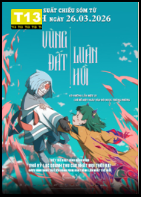
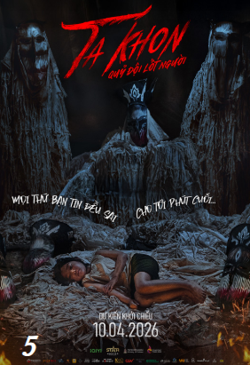
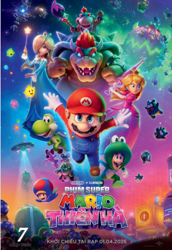
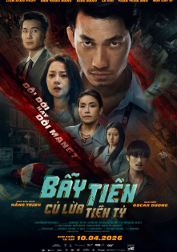
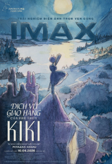
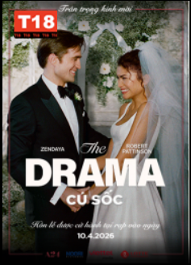
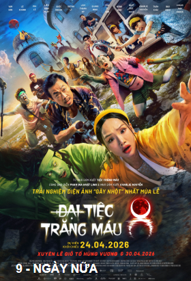
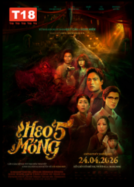

Phim Hot Trong Tuần
Trang chủÁnh dương của mẹ - Vietsub
Đếm ngày xa mẹ - Vietsub

Vùng đất luân hồi - Vietsub
Phim đang khởi chiếu

TA KHON - Quỷ đội lốt người
Dưới bóng điện hạ - vietsub

Super mario - Thiên hà

Bẫy tiền - Cú lừa tiền tỷ

Dịch vụ giao hàng của phù thủy KIKI

Drama - Cú sốc
Phim Sắp chiếu
Xem tất cả
Đại tiệc trăng máu 8
